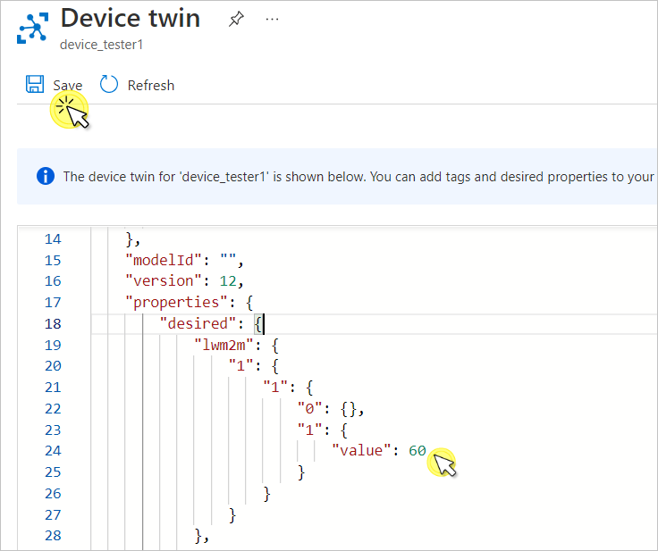
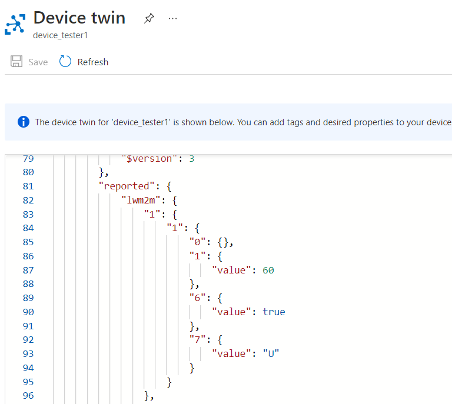
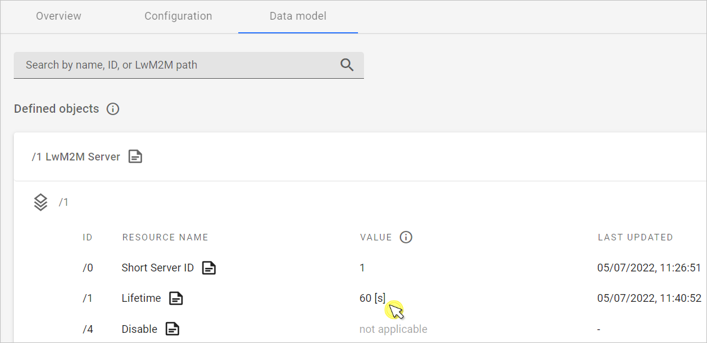
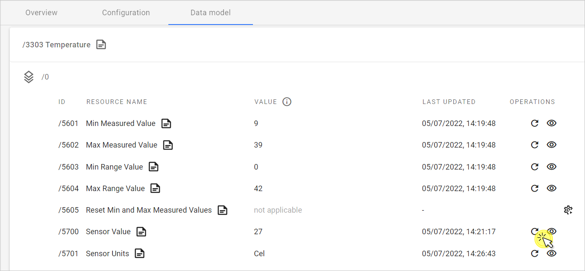
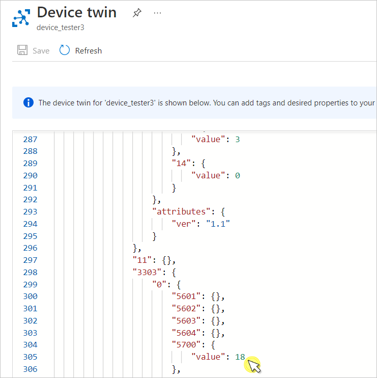

Perform LwM2M Read and Write#
This section describes how to perform a LwM2M WRITE and READ operations in your Azure IoT Hub and Coiote DM.
A WRITE operation lets you change the current value on the given data model component: object, object instance, and resource. The READ enables you to see the updated value of an object, object instance, or resource.
In this section, you learn how to:
- Perform WRITE on resources
- Check for the reported value changes in resources
- Perform READ on resources
Prerequisites#
- An active Azure IoT Hub with hub owner access permissions.
- A Coiote DM user account with permissions to use the integration extension.
- A device group created in Coiote DM.
- A configured extension between Coiote DM and Azure Iot Hub.
- A configured integration template in Coiote DM, assigned to the device group.
- A connected device.
Perform WRITE#
Let’s perform a WRITE operation on the Lifetime resource with ID 1/1/1. From the Azure IoT integration standpoint, Lifetime it is interpreted as a Property.
In Azure IoT Hub, value changes for both Telemetry and Property are stored in the Device twin. To perform a WRITE operation, do the following:
-
In your Azure IoT Hub account, go to Devices from the left pane.
-
Click on the device and then go to Device twin.

-
Find the desired property in the JSON snippet. This is where you define what needs to be observed.
-
To the 1/1/1 (Lifetime) resource, add the following snippet under the
"desired": {property and click Save:"lwm2m": { "1": { "1": { "0": {}, "1": { "value": 60 }, } }, },Note
The exact LwM2M path of the Lifetime resource depends on the LwM2M client used and may vary slightly, e.g. in the object instance number: 1/0/1. For the purpose of this tutorial, the Anjay LwM2M Client is used. If needed, modify the snippet according to your case.

After you click Save, the line with value: 60 will trigger the WRITE operation.
See value changes#
In Azure IoT Hub#
The value change for the resource is displayed in the same Device Twin JSON snippet. Scroll down to the Reported property and find the value line for the 1/1/1 resource.
"reported": {
"lwm2m": {
"1": {
"1": {
"0": {},
"1": {
"value": 60
},

If you don’t see any changes, click Refresh. If it doesn’t help, you can check whether the WRITE operation has been performed in Coiote DM as well.
In Coiote DM#
This step is optional. If you want to make sure the WRITE has been correctly performed in Coiote DM, do the following:
- In Coiote DM, go to your device and select the Data model tab.
-
Expand the LwM2M Server object, find the Lifetime (1/1/1) resource in the list. If there is no change in data, use the Refresh icon in the top right corner of the screen.

You have successfully performed a LwM2M WRITE on a resource.
Perform READ#
Let’s perform a READ operation on the Temperature object's Sensor Value resource with ID 3303/0/5700 defined as a Property in the integration template in Coiote DM.
To learn more about reading value changes for both Telemetry and Property, refer to LwM2M mappings for Azure IoT Hub. To perform a READ operation, do the following:
- In Coiote DM, go to your device and select the Data model tab.
- Expand the Temperature object, and find the Sensor Value (3303/0/5700) resource in the list.
- Click the Read resource icon located under the OPERATIONS column. 
- The READ is scheduled - if there is any value change, it should be displayed in a few moments (depending on device settings, like the Lifetime resource).
See value change in Azure IoT Hub#
The value change for the resource is displayed in the Device Twin JSON snippet. Scroll down to the Reported property and find the value line for the 3303/0/5700 resource.
"reported": {
"lwm2m": {
"3303": {
"0": {
"5601": {},
"5602": {},
"5603": {},
"5604": {},
"5700": {
"value": 18
},

If you don’t see any changes, click Refresh. If it doesn’t help, you can check whether the READ operation has been performed in Coiote DM as well.
Next steps#
Air quality monitoring - tutorial